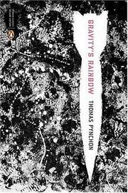
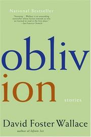
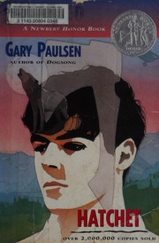
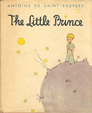
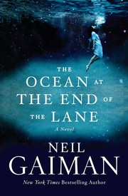
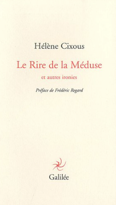
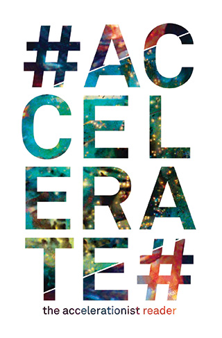
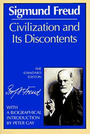
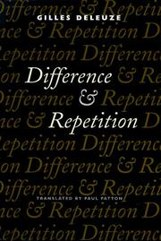
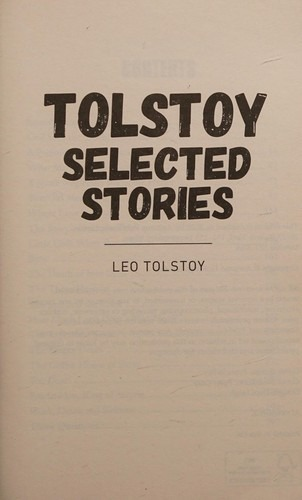

← archive bookshelf 101 books Books I return to
a passage kept ↗ A meaning spins, remaining upright on an axis of normalcy aligned with the conventions of connotation and denotation, and yet: to spin is not normal, and to dissemble normal uprightness by means of this fantastic motion is impertinent. What is the relation of impertinence to the hope of understanding? To delight? The story concerns the reason why we love to fall in love. Beauty spins and the mind moves. To catch beauty would be to understand how that impertinent stability in vertigo is possible. But no, delight need not reach so far. To be running breathlessly, but not yet arrived, is itself delightful, a suspended moment of living hope. Suppression of impertinence is not the lover’s aim. Nor can I believe this philosopher really runs after understanding. Rather, he has become a philosopher (that is, one whose profession is to delight in understanding) in order to furnish himself with pretexts for running after tops.
Anne Carson, Eros the Bittersweet
On my mind lately featured · 11 A Breath of Life Clarice Lispector Agnes Martin: Writings / Schriften Agnes Martin Anti-Oedipus: Capitalism and Schizophrenia Gilles Deleuze & Félix Guattari Desert Islands: And Other Texts, 1953-1974 Gilles Deleuze Either/Or, Part I Søren Kierkegaard Franny and Zooey J.D. Salinger 
Gravity’s Rainbow Thomas Pynchon Naked Lunch: The Restored Text William S. Burroughs 
Oblivion David Foster Wallace Spinoza: Practical Philosophy Gilles Deleuze The Waves Virginia Woolf The collection A personal shelf, gathered over time. Open a cover for a closer look; editions may differ.
No matches. Try another title or genre.
Art & criticism 3 Agnes Martin: Writings / Schriften Agnes Martin
1992
a passage kept ↗ K-punk: The Collected and Unpublished Writings of Mark Fisher Mark Fisher
2018
The Decay of Lying Oscar Wilde
1889
Coming of age 4 
Hatchet (Brian's Saga, #1) Gary Paulsen
1987
Looking for Alaska John Green
2005
Paper Towns John Green
2008
The Perks of Being a Wallflower Stephen Chbosky
1999
Fantasy & science fiction 17 Alice's Adventures in Wonderland (Alice's Adventures in Wonderland, #1) Lewis Carroll
1865
Ender’s Game (Ender's Saga, #1) Orson Scott Card
1985
Flowers for Algernon Daniel Keyes
1966
Gulliver’s Travels Jonathan Swift
1726
Harry Potter and the Deathly Hallows (Harry Potter, #7) J.K. Rowling
2007
Harry Potter and the Goblet of Fire (Harry Potter, #4) J.K. Rowling
2000
Harry Potter and the Philosopher's Stone (Harry Potter, #1) J.K. Rowling
1997
Miss Peregrine's Home for Peculiar Children (Miss Peregrine's Peculiar Children, #1) Ransom Riggs
2011
Ready Player One (Ready Player One, #1) Ernest Cline
2011
Stuart Little E.B. White
1945
The Elders (Mind Dimensions, #4) Dima Zales
2015
The Hunger Games (The Hunger Games, #1) Suzanne Collins
2008
The Lightning Thief (Percy Jackson and the Olympians, #1) Rick Riordan
2005

The Little Prince Antoine de Saint-Exupéry
1943
The Martian Andy Weir
2011

The Ocean at the End of the Lane Neil Gaiman
2013
The Thought Readers (Mind Dimensions, #1) Dima Zales
2014
Feminism & theory 2 Intercourse Andrea Dworkin
1987
a passage kept ↗ 
The Laugh of the Medusa Hélène Cixous
1975
a passage kept ↗ Horror & the uncanny 4 Misery Stephen King
1987
Night Shift Stephen King
1978
The Complete Stories and Poems Edgar Allan Poe
1966
The Shining (The Shining, #1) Stephen King
1977
Literary fiction 26 A Breath of Life Clarice Lispector
1978
a passage kept ↗ A Supposedly Fun Thing I'll Never Do Again: Essays and Arguments David Foster Wallace
1997
Duino Elegies Rainer Maria Rilke
1923
Franny and Zooey J.D. Salinger
1961
Girl with Curious Hair David Foster Wallace
1989
Gravity’s Rainbow Thomas Pynchon
1973
a passage kept ↗ Infinite Jest David Foster Wallace
1996
Kafka on the Shore Haruki Murakami
2002
Letters to a Young Poet Rainer Maria Rilke
1929
Lolita Vladimir Nabokov
1955
Molloy Samuel Beckett
1951
Naked Lunch: The Restored Text William S. Burroughs
1959
Notes from the Underground Fyodor Dostoevsky
1864
Quack This Way David Foster Wallace
2013
Raise High the Roof Beam, Carpenters & Seymour: An Introduction J.D. Salinger
1963
The Broom of the System David Foster Wallace
1987
The Brothers Karamazov Fyodor Dostoevsky
1880
The Catcher in the Rye J.D. Salinger
1951
The Crying of Lot 49 Thomas Pynchon
1966
The Death of Ivan Ilych Leo Tolstoy
1886
a passage kept ↗ The Dharma Bums Jack Kerouac
1958
The Mushroom at the End of the World: On the Possibility of Life in Capitalist Ruins Anna Lowenhaupt Tsing
2015
The Picture of Dorian Gray Oscar Wilde
1890
The Sorrows of Young Werther Johann Wolfgang von Goethe
1774
The Waves Virginia Woolf
1931
a passage kept ↗ This Is Water: Some Thoughts, Delivered on a Significant Occasion, about Living a Compassionate Life David Foster Wallace
2009
Memoir & biography 2 Every Love Story Is a Ghost Story: A Life of David Foster Wallace D.T. Max
2012
The Glass Castle Jeannette Walls
2005
Philosophy 30 
#Accelerate: The Accelerationist Reader Robin Mackay
2014
A Thousand Plateaus: Capitalism and Schizophrenia Gilles Deleuze & Félix Guattari
1980
a passage kept ↗ Acid Communism Mark Fisher
2018
Anti-Oedipus: Capitalism and Schizophrenia Gilles Deleuze & Félix Guattari
1972
a passage kept ↗ Being and Time Martin Heidegger
1927
Beyond the Pleasure Principle Sigmund Freud
1920

Civilization and Its Discontents Sigmund Freud
1930
Cute Accelerationism Amy Ireland & Maya B. Kronic
2024
Desert Islands: And Other Texts, 1953-1974 Gilles Deleuze
2002

Difference and Repetition Gilles Deleuze
1968
Either/Or, Part I Søren Kierkegaard
1843
Eros the Bittersweet Anne Carson
1986
Essays and Aphorisms Arthur Schopenhauer
1851
a passage kept ↗ Ethics Baruch Spinoza
1677
Fanged Noumena: Collected Writings, 1987–2007 Nick Land
2011
Freedom from the Known J. Krishnamurti
1969
Inventing the Future: Postcapitalism and a World Without Work Nick Srnicek
2015
Phenomenology of Spirit Georg Wilhelm Friedrich Hegel
1807
Poetry, Language, Thought Martin Heidegger
1971
Postcapitalist Desire: The Final Lectures Mark Fisher
2020
Postscript on the Societies of Control Gilles Deleuze
1990
Pure Immanence: Essays on a Life (Mit Press) Gilles Deleuze
2001
Simulacra and Simulation Jean Baudrillard
1981
Spinoza: Practical Philosophy Gilles Deleuze
1970
Structure, Sign, and Play Jacques Derrida
1967
Tao Te Ching Lao Tzu
c. 4th century BCE
The Enchiridion Epictetus
c. 125
The Solar Anus Georges Bataille
1931
Tractatus Logico-Philosophicus Ludwig Wittgenstein
1921
a passage kept ↗ Visions of Excess: Selected Writings, 1927–1939 Georges Bataille
1985
Poetry 4 A Light in the Attic Shel Silverstein
1981
Devotions: The Selected Poems of Mary Oliver Mary Oliver
2017
The Iliad (Classics Illustrated) Homer
c. 8th century BCE
Where the Sidewalk Ends Shel Silverstein
1974
Short stories 9 A Prisoner in the Caucasus Leo Tolstoy
1872
Dubliners James Joyce
1914
Labyrinths: Selected Stories & Other Writings Jorge Luis Borges
1962
Oblivion David Foster Wallace
2004
a passage kept ↗ The Complete Stories Franz Kafka
1971
a passage kept ↗ The Dead James Joyce
1914
The Most Dangerous Game Richard Connell
1924
The Ones Who Walk Away from Omelas Ursula K. Le Guin
1973

Tolstoy: Selected Stories Leo Tolstoy
2018